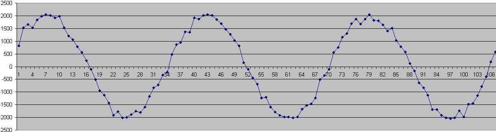
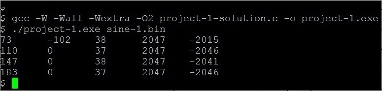
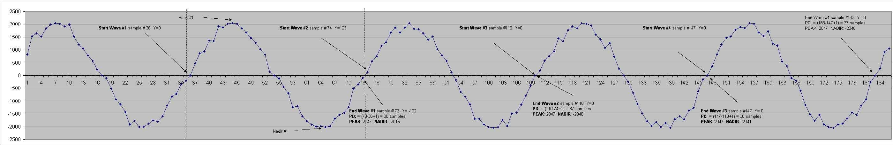

We now apply everything we know about file I/O to process a digital signal. For our purposes a digital signal is a sequence of values representing the amplitude of a wave with respect to time. These values are time sequential at equal time intervals apart. The amount of time between each sample determines the sampling rate. If a series of amplitude values are 1000'th of second apart then the sampling rate is said to be 1000 samples per second or 1000Hz.

A few fundamental characteristics of a periodic signal (wave) are:
In our above discussion an important assumption is being made. The wave is periodic.
The txt2bin.c program will read a text file of numbers such as sine-1.txt which represents the digital signal. These values are a simulation of a 12 bit A/D conversion that is centered around zero. Thus the values will range from -2047 to + 2048. Each value will be written out in 16 bits (short int). Your txt2bin.c progam will read this text file one number at a time until end of file. Each time a number is read from the text file, that number will be written out (using fwrite) to a binary file. The value written out will be a short int (16 bits on most systems). Your txt2bin.c program will take two command line args: the input filename and the output filename. The input file should be the text file named "sine-1.txt" or such. The second command line argument will be the name of a binary file that is to be created such as "sine-1.bin". Since your program will write out a binary value every time it reads a number from the text file, you will not use any arrays anywhere in this program (or the second program either). Every value must be read in from the text file using fscanf(infile, "%hi", &shortVal ), and then a value written to the binary output file using fwrite( &shortVal, sizeof(shortVal), 1, outFile ) as illustrated in the File I/O demo code in Chapter 1.3.
After you write out the binary file, close both files and then reopen the binary file for reading. Read the binary values back in one at a time and echo them out to stdout via printf. Your txt2bin program must not write any other text to stdout during execution. After you have finished echoing the values read back from the binary file - close the binary file.
Below is what a compilation then execution of txt2bin should look like: (the .exe is not needed on the executable - I just named it that way for emphasis/clarity). Your txt2bin program must not write anything to stdout except the numbers you read back in from the binary file you just wrote to disk.
$ gcc -W -Wall -Wextra -O2 txt2bin.c -o txt2bin.exe
$ ./txt2bin.exe sine-1.txt sine-1.bin
814
1533
1652
1523
1843
1990
2047
2016
1924
1987
1523
1211
1055
777
566
241
0
-110
-508
-946
-1129
-1427
-1918
-1771
-2015
-2004
-1883
-1752
-1806
-1600
-1170
-826
-724
-334
-212
0
474
862
940
1365
1353
1917
1877
2016
2047
2016
1847
1687
1459
1277
1027
818
152
0
-106
-443
-693
-1236
-1206
-1595
-1781
-1923
-1987
-1980
-2015
-1983
-1680
-1530
-1459
-1233
-508
-341
-102
123
551
755
1163
1295
1688
1873
1680
1867
2047
1814
1803
1646
1402
1520
1030
790
571
126
-174
-642
-829
-1126
-1692
-1699
-1923
-2015
-2046
-2015
-1744
-1981
-1485
-1450
-1134
-792
-401
0
180
582
756
946
1452
1339
1768
1924
1838
2047
2016
1951
1596
1415
1078
1260
740
266
0
-250
-683
-1118
-1491
-1787
-1970
-1823
-2015
-1855
-2041
-1707
-1592
-1711
-1374
-1266
-613
-148
0
358
833
1218
1475
1527
1781
1895
1854
2047
2016
1680
1553
1731
1234
1174
541
367
-95
-195
-591
-1149
-1528
-1770
-1539
-1923
-2015
-2046
-1915
-1882
-1686
-1444
-1545
-1177
-929
-257
0
273
934
1054
$
If your txt2bin program was written correctly, you will see a file named sine-1.bin with a size of 372 bytes in your directory. You can verify using the ls command a follows:
$ ls -l *.bin
-rw-r--r-- 1 hoffmant users 372 Jan 12 21:57 sine-1.bin
$
If your txt2bin program is correct you should also notice that the output from it is identical to the contents of the original sine-1.txt file. Linux can help you verify this by using the following commands:
$ ./txt2bin.exe sine-1.txt sine-1.bin > output.txt
$ diff output.txt sine-1.txt
$
The first command executed your program again but this time the output that normally would have gone to the screen (stdout) was redirected by the carrot operator > into a file named output.txt.
The second command (diff) looks for any differences between then two files and reports each line that differs from the corresponding line in the other file. Since there was no ouput from the diff command, we know that the two files are identical and that your binary file must be correct since it is of the correct size and produced the correct values when echoed back to the screen.
Here is a sample execution with correct output for the first sine wave.
Here is a graph of the first sine wave. This graph shows where those output values came from. Note that the first 35 values are not part of a full wave because a full wave must start either on zero or the first point above zero after a zero crossing.

$ ./project-1.exe sine-1.bin > output.txt
$ diff --ignore-all-space --ignore-blank-lines output.txt correct-output-sine-1.txt
Notice we use a more forgiving form of the diff command which allows you to use spaces or tabs and only looks at the non whitespace.
Ensure that your program builds and runs on thoth.cs.pitt.edu as that will be where we are testing.
When you’re done, create a gzipped tarball (as we did in the first and second lab) of your commented source files and compiled executables, and copy to this location:
~aus4/submit/449/
Make sure you name the file USERNAME_p1.tar.gz where USERNAME is your Pitt username (e.g. aus4), and that you have your name in the comments of your source file.
Note that this directory is insert-only, you may not delete or modify your submissions once in the directory. If you’ve made a mistake before the deadline, resubmit with a number suffix like USERNAME_p1_1.tar.gz
The highest numbered file before the deadline will be the one that is graded, however for simplicity, please make sure you’ve done all the work and included all necessary files before you submit.